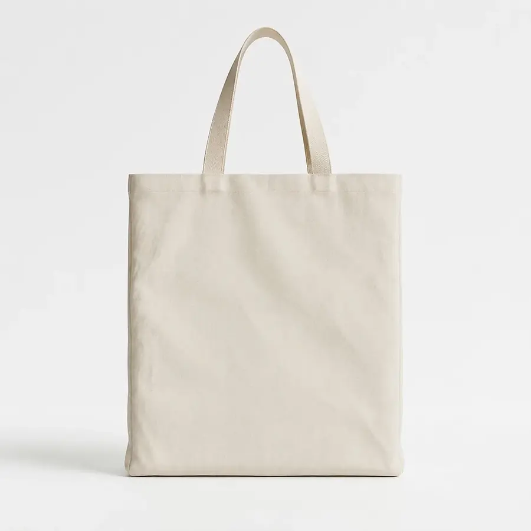

A ecobag é uma sacola reutilizável de tecido. Para empresas, cumpre duas funções: brinde de uso recorrente e produto de venda com a marca. Como tem uma área frontal grande e lisa, recebe bem a estampa. Este guia reúne o que decidimos com nossos clientes antes de produzir: material, tamanho, alça, técnica de personalização e o que de fato sustenta o argumento ambiental.
Por que a ecobag funciona como brinde
Um brinde só gera exposição se for usado. A ecobag é carregada no mercado, na feira, na academia e no trabalho, o que coloca a marca à vista em ambientes diferentes. Em São Paulo, a lei municipal 15.374/2011 proibiu a distribuição gratuita de sacolas plásticas no comércio e determinou que os estabelecimentos estimulem o uso de sacolas reutilizáveis (Câmara Municipal de São Paulo), o que reforça o hábito de sair de casa com uma sacola.
Materiais mais usados
- Algodão cru: toque natural e boa base para silk. Disponível em diferentes gramaturas; quanto maior a gramatura, mais encorpada e durável a sacola.
- Lona de algodão: mais firme, com aparência de produto de loja. Indicada para quem quer vender a ecobag ou fazer um brinde de valor maior.
- RPET (poliéster reciclado): feito a partir de garrafas PET recicladas. Leve, resistente e compatível com sublimação.
- Poliéster e oxford: boa resistência, custo competitivo e opção de estampa total por sublimação.
Não trabalhamos com TNT. Para ações de curtíssima duração ele é comum no mercado, mas se desgasta rápido e não combina com a proposta de uma sacola reutilizável.
O argumento ambiental, com números
A sacola reutilizável só compensa o impacto ambiental se for reutilizada muitas vezes. O estudo de ciclo de vida da agência ambiental do Reino Unido, com dados de 2006, calculou que uma sacola de algodão precisaria ser usada 131 vezes para ter impacto de aquecimento global menor que uma sacola plástica convencional usada uma vez (Environment Agency, 2011). Em 2018, a agência ambiental dinamarquesa, considerando um conjunto maior de indicadores ambientais, chegou a números bem mais altos para o algodão (Miljøstyrelsen, 2018).
A conclusão prática para quem encomenda: uma ecobag que dura e é usada por anos cumpre a promessa; uma ecobag frágil, que vai para a gaveta, não. Por isso recomendamos tecido encorpado, alça bem costurada e uma arte que a pessoa queira carregar na rua.
Tamanhos mais pedidos
Não existe tamanho padrão no mercado. Na nossa produção, três faixas cobrem a maioria dos projetos:
- Pequena (aprox. 30 x 35 cm): brinde leve, sacola de loja, kit de evento.
- Média (aprox. 38 x 42 cm): a mais versátil, para o dia a dia e compras pequenas.
- Grande (aprox. 45 x 50 cm): feira, praia e modelos com visual mais fashion.
O tamanho também define a área útil da arte. Um fundo com sanfona (base) aumenta a capacidade sem mudar a frente.
Tipos de alça
A alça define conforto e percepção de qualidade. Alça curta (de mão) tem visual mais de moda. Alça longa (de ombro) é a mais prática para carregar peso. Alça em fita ou corda colorida vira elemento de identidade da marca. O ponto crítico é a costura de fixação: em ecobag que vai carregar compras, pedimos reforço em X ou em retângulo no encontro da alça com o corpo.
Técnicas de personalização
- Silk screen: melhor custo em volume para logos de 1 a 3 cores. É a técnica mais usada em algodão cru e lona.
- Sublimação: estampa colorida em toda a peça, mas só em poliéster ou RPET claro. A tinta não se fixa em algodão (Graphics Pro).
- Bordado: acabamento de maior valor, indicado para ecobags vendidas como produto de marca.
- Etiqueta tecida: assinatura discreta na costura lateral ou interna.
O comparativo completo está em bordado, silk ou sublimação.
Quanto custa uma ecobag personalizada
O preço depende de material, tamanho, alça, técnica e quantidade. Em produção sob medida, parte do custo é fixo (molde, preparação, telas de silk) e se dilui no lote, então o valor por peça cai conforme a quantidade aumenta. O caminho mais eficiente é definir material e arte primeiro e cotar depois. Modelos e acabamentos que produzimos estão na página de ecobags personalizadas.
Brinde ou produto para vender
Para brinde, priorize custo por peça, área de logo e um tamanho útil para o público. Para vender com a sua marca, invista em tecido encorpado, alça bem acabada, etiqueta e embalagem, que são os detalhes que justificam o preço na prateleira. Se a ideia é lançar uma linha própria, veja como criar uma marca de bolsas e acessórios. Para ações corporativas, a ecobag faz parte da nossa linha de brindes corporativos.
Prazo
Produzimos a partir de 20 peças por modelo e cor. A peça piloto fica pronta em até 15 dias e a produção leva até 25 dias úteis após a aprovação. Para eventos com data fixa, conte o prazo de trás para frente a partir do dia da entrega.
Perguntas frequentes
Qual o pedido mínimo de ecobag personalizada?
Produzimos a partir de 20 peças por modelo e cor, com peça piloto aprovada antes do lote.
Qual material é melhor para ecobag?
Algodão cru e lona são os mais usados para silk e para um visual natural. Para estampa colorida em toda a peça, RPET ou poliéster, que aceitam sublimação.
Qual a melhor técnica de estampa para ecobag?
Silk screen para logos de poucas cores, com melhor custo em volume. Sublimação para estampas coloridas, somente em poliéster ou RPET. Bordado quando a ecobag será vendida como produto de marca.
Ecobag de algodão é sempre mais sustentável?
Só se for usada muitas vezes. Estudos de ciclo de vida das agências ambientais do Reino Unido (2011) e da Dinamarca (2018) mostram que a sacola de algodão precisa de muitas reutilizações para compensar o impacto da produção. Durabilidade é o que sustenta o argumento.
Fontes
- Life cycle assessment of supermarket carrier bags: a review of the bags available in 2006, Environment Agency (Reino Unido), 2011.
- Life Cycle Assessment of grocery carrier bags (Environmental Project no. 1985), Miljøstyrelsen, Danish Environmental Protection Agency, 2018.
- Executivo sanciona proibição do uso de sacolinhas plásticas, Câmara Municipal de São Paulo, 2011.
- Why Doesn't Sublimation Work on Cotton?, Graphics Pro.
Pronto para produzir com a LS Confecções?
Fabricação B2B de bolsas, mochilas e acessórios personalizados a partir de 20 unidades, em São Paulo. Fale direto com nosso comercial e receba uma proposta em minutos.
Solicitar orçamento